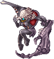

Episode 16.1: Banquet for Heroes¶
The heroes who returned from the Morocc expedition are invited to a royal banquet in Prontera Castle. The party ends with a surprise attack during the blessing ritual, and you are sent back through the royal family's memories to find out who stole a piece of Ymir's Heart. The whole episode happens in Prontera: the castle (prt_cas), the guest wing (prt_cas_q), the Royal Library (prt_lib), and a "past" version of the city (prt_q).
Level: Base Level 100 or higher. Starts at: any Royal Messenger (main one in Prontera, /navi prontera 121/72).
Before you start¶
| Requirement | Details |
|---|---|
| Base Level | 100 or higher (the Royal Messenger checks this). |
| Previous story | You must have finished the New World access quest: either Onward to the New World or the Cat Paw Agent route. Without it the messenger only says he is looking for heroes. |
| Inventory | Keep some free weight. Several NPCs refuse to talk if you are close to overweight. |
| Party | The two story instances are solo, but you must be in a party and be its leader to create them. Make a one-person party before you go to the library. |
Episode Skip NPC
The custom Episode Skip NPC in Prontera (/navi prontera 164/163) can skip 16.1 and 16.2 together for one Episode 16 Clear Ticket #1000282. You must be a 3rd class. The skip puts 16.1 at the "To the Past" stage, marks 16.2 as finished, and gives some of the story items. It does not give the story EXP.
The Royal Messenger stands in many towns, and all of them do the same thing:
| Town | Location |
|---|---|
| Prontera | /navi prontera 121/72 |
| Rachel | /navi rachel 119/131 |
| Al De Baran | /navi aldebaran 159/113 |
| Alberta | /navi alberta 119/59 |
| Veins | /navi veins 200/108 |
| Geffen | /navi geffen 123/68 |
| Payon | /navi payon 168/65 |
| Morroc | /navi morocc 152/97 |
| Juno | /navi yuno 162/132 |
| Lighthalzen | /navi lighthalzen 152/100 |
Story path¶
Chapter 1: The invitation¶
- Royal Messenger (any town above). He gives you a Banquet Invitation Letter #6933 and offers to send you to the castle gate right away. Quest: Invitation to Royal Banquet.
- Enter Prontera Castle. When you step into the hall, Chamberlain Bell appears (
/navi prt_cas 217/150) and leads you down the left corridor. Follow him to the guest wing (the warp at/navi prt_cas 152/163takes you toprt_cas_q). From there, take the door at/navi prt_cas_q 130/8into your own guest room. - Chamberlain Bell in your guest room (
/navi prt_cas_q 26/30). He takes the invitation and explains that you are a special guest and an observer for the ritual. Before the ritual you are expected to greet all the noble families. Quest: Socializing Starts from an Eye Contact.
Chapter 2: Greet the seven families¶
You must make first contact with all seven families. The guest-wing corridor (prt_cas_q, around x 130–153) has a door to each family's room. Talk to Chamberlain Bell at any time and he lists the families you still need to visit. You can do them in any order.
| Family | What to do | Quest log |
|---|---|---|
| Heine | Take the door at /navi prt_cas_q 130/32. Walk into the room (a scene plays near prt_cas_q 22/77), then talk to Kronecker G. Heine (/navi prt_cas_q 19/85). |
Visit the Heines |
| Nerius | Take the door at /navi prt_cas_q 130/56. Talk to Spica Nerius (/navi prt_cas_q 20/139). |
Visit the Nerius |
| Richard | Take the door at /navi prt_cas_q 153/143. Talk to the Butler for the Richards (/navi prt_cas_q 80/80), then to Po Richard (/navi prt_cas_q 93/74). |
The Royal Richard |
| Walther | Take the door at /navi prt_cas_q 130/80. Talk to Ian Walther (/navi prt_cas_q 20/184), then to Isenhonor Walther (/navi prt_cas_q 14/184). |
Look around the Walther Family, then In Search of the Guardian Knight |
| Wigner | Take the door at /navi prt_cas_q 153/119. Talk to Levuiere Wigner (/navi prt_cas_q 82/21), then to Jurgen Wigner (/navi prt_cas_q 95/9). |
To Jurgen, then To Levuiere and His Wife |
| Roegenburg | Take the door at /navi prt_cas_q 153/191. Talk to Maximilian Roegenburg (/navi prt_cas_q 90/186), then to Wolf Roegenburg (/navi prt_cas_q 96/186). |
To Wolf, then To Isaac |
| Geoborg | Take the door at /navi prt_cas_q 153/167. Walk in or talk to a bodyguard, then talk to the Queen (/navi prt_cas_q 93/129) and ask about the Geoborg family. |
The Geoborgs |
When the last family is done, the quest log shows What Is the Next Thing on the Schedule ?.
- Return to Chamberlain Bell (
/navi prt_cas_q 26/30). You receive 300,000 Base / 300,000 Job EXP and 10 Honor Token #6919. Quest: Participating in the Banquet.
Note
The second step of each family (for example Isenhonor's Guardian Knight errand, the Wigner and Roegenburg follow-ups, or the Geoborg whispers) starts that family's own side story. Only first contact is needed for the main story. See After the story.
Chapter 3: The banquet¶
- Go back to the castle's main hall. Walking through the corridor at
/navi prt_cas 177/164plays a scene with a suspicious guest. Quest: Suspicious Movement. - In the banquet hall, talk to Spica Nerius (
/navi prt_cas 106/240) or Skia Nerius (/navi prt_cas 104/240). After a long scene, Nyhill leaves the hall. Quest: Find Nyhill. - Follow him. Step on the spot at
/navi prt_cas 183/164to see Skia chasing him. Quest: Where Is Nyhill? - Go to the spot at
/navi prt_cas 27/43(west side of the castle). Skia and an unstable Nyhill appear. Talk to Skia Nerius (/navi prt_cas 25/35). Quest: Waiting for the Ritual. - Go back to your guest room and talk to Chamberlain Bell (
/navi prt_cas_q 26/30). Court Mage Nillem appears and warps you to the Royal Library (prt_lib). Quest: Attend the Ritual.
Chapter 4: The ritual and the surprise attack¶
- Mage Nillem (
/navi prt_lib 91/85). As party leader, choose to create the Ritual of Blessing instance. Then enter it through the Room of Consciousness portal (/navi prt_lib 88/90). - Watch the ritual inside the instance. After the intruders attack, talk to Kronecker G. Heine inside the instance. You are sent back to the library. Quest: Surprise Attack.
- Back in the library, walk to
/navi prt_lib 88/80. The family heads gather. Talk to Ian Walther (/navi prt_lib 85/82) and defend yourself (Lady Nerius testifies for you). - Mage Nillem (
/navi prt_lib 91/85) proposes a look at the past. Quest: I'd Like to See that Too. - Lindt the Librarian (
/navi prt_lib 76/80). - Mage Nillem again. Quest: Escape from the Past Memories of the Royal Family.
- Leave through the Guardian Knight (
/navi prt_lib 56/61), who sends you to the Royal Prison area (prt_pri00). Talk to Overwatcher Terketh (/navi prt_pri00 58/128). Quest: What's Next?
Chapter 5: The families' secret¶
- Go back to your guest room and talk to Chamberlain Bell. Choose "I'll visit her now." Quest: Invitation from the Nerius.
- Take the Nerius door (
/navi prt_cas_q 130/56) and talk to Spica Nerius (/navi prt_cas_q 18/136). Quest: Heine Now. - Take the Heine door (
/navi prt_cas_q 130/32) and talk to Kronecker G. Heine (/navi prt_cas_q 19/85). You receive 400,000 Base / 400,000 Job EXP and 20 Honor Token #6919. Quest: To the Past. - Back in your guest room, talk to Chamberlain Bell. Nillem appears. Talk to Court Mage Nillem (
/navi prt_cas_q 28/28) and agree to go. He warps you to the library.
Chapter 6: Room of Consciousness¶
- Mage Nillem (
/navi prt_lib 91/85). He opens the Dimension Warper MkII (/navi prt_lib 94/82). Use it to go to the inner library (prt_lib_q). Quest: Once More! - Nillem (
/navi prt_lib_q 91/85). Talk once, then talk again as party leader to create the Room of Consciousness instance. Enter it through the Swaying Space (/navi prt_lib_q 88/90). - Clear the instance. The Valkyrie takes Ymir's Heart, Fenrir pulls you out, and you are returned to
prt_lib_q. Quest: Lost Imir Heart. - Nillem (
/navi prt_lib_q 91/85). Quest: Prontera at the Time. - Take the warp at
/navi prt_lib_q 9/25into old Prontera (prt_q). Talk to Nillem (/navi prt_q 157/334). You can stay and explore old Prontera, or let him send you back to the library right away. If you stay, talk to him again when you want to leave. Quest: Who Knows the Truth. - Kronecker G. Heine (
/navi prt_lib 80/79, he appears when you step onprt_lib 88/80). Tell him what you saw. You receive 800,000 Base / 800,000 Job EXP and 30 Honor Token #6919. Quest: Nillem Is Not Almighty (a 4-hour cooldown before your first repeat run). - Friedrich S. Heine (
/navi prt_cas_q 21/83, Heine room). He gives you free access to the Past Memories of the Royal Family. This completes the main story of 16.1.
Tip
After step 20, Court Mage Nillem can be summoned from your guest room through Chamberlain Bell ("Call Nillem"). He warps you straight to the library. Bell can also call a Kafra employee or a Giant Beast Manager, and fully heals you ("Please prepare some refreshments.").
Rewards¶
| Step | Reward |
|---|---|
| 1. Royal Messenger | 1 Banquet Invitation Letter #6933 (taken back at step 3) |
| 4. All families greeted | 300,000 Base / 300,000 Job EXP, 10 Honor Token #6919 |
| 19. Kronecker (Heine Now) | 400,000 Base / 400,000 Job EXP, 20 Honor Token #6919 |
| 26. Kronecker (Who Knows the Truth) | 800,000 Base / 800,000 Job EXP, 30 Honor Token #6919 |
| Total | 1,500,000 Base / 1,500,000 Job EXP, 60 Honor Tokens |
Finishing the main story unlocks:
- Repeatable runs of the Room of Consciousness, handed out by Friedrich S. Heine.
- Episode 16.2 (Terra Gloria). Its first scene triggers in your guest room once you finish step 19 of this page.
After the story¶
- Room of Consciousness repeat: talk to Friedrich S. Heine (
/navi prt_cas_q 21/83) to take Hope You Cannot Let Go (defeat
Bijou #3450 once in the instance). Run it from Nillem (/navi prt_lib_q 91/85). Report back to Friedrich for 400,000 Base / 400,000 Job EXP and 10 Honor Token #6919. A 4-hour cooldown follows (Nillem Is Not Almighty). - Royal kitchen: after step 3, the Royal Chef (
/navi prt_cas 213/177) sends you to the Royal Head Chef (/navi prt_cas 309/200). His one-time chain gives 700,000 Base / 700,000 Job EXP and 10 Honor Token #6919. It then opens three daily chores that each give 4 Honor Tokens: sauce for the Royal Sauce Master (/navi prt_cas 319/211), washing 15 dishes for the Dishwasher (/navi prt_cas 302/205), and grilling the griffin at/navi prt_cas 358/124. - Family side stories: the Walther chain (Isenhonor sends you to Alberta, the Royal Prison and Veins) and the Roegenburg chain each end with 1,000,000 Base / 500,000 Job EXP and 10 Honor Token #6919. Agnes Roegenburg (
/navi prt_cas_q 96/184) then has daily material requests worth 200,000 Base / 200,000 Job EXP and 4 Honor Tokens each. The Wigner and Geoborg families have their own investigations around the castle.